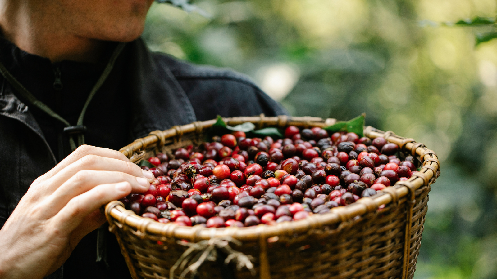
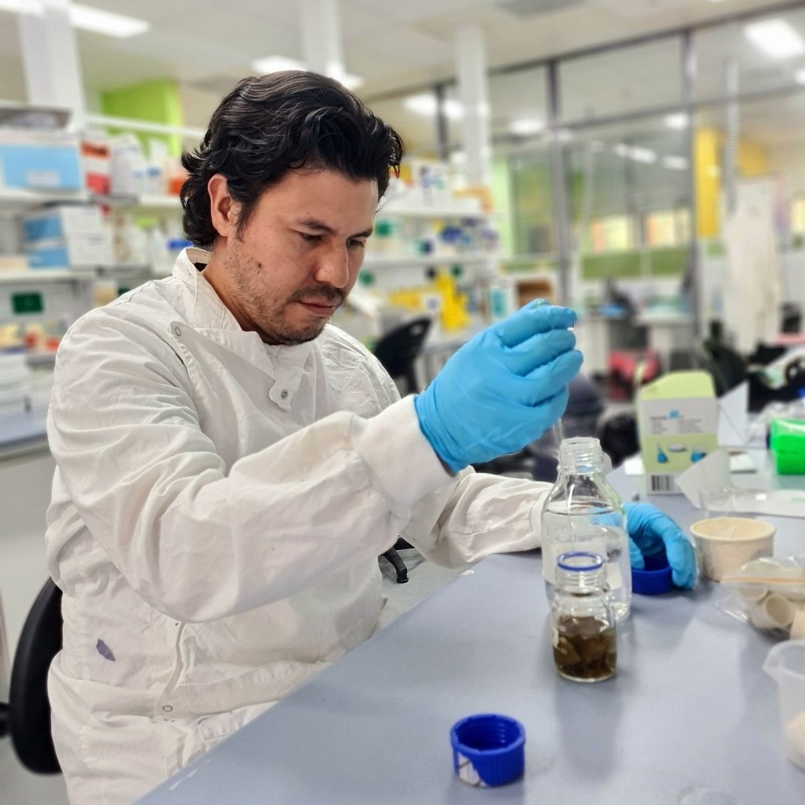

R&D for Agricultural Waste Valorisation — Built for Scale and Investment
Building commercial products from the value hidden inside agricultural waste.
AG Intellisense is the research and development company behind a growing pipeline of products extracted from agricultural waste. We are rooted in metabolomics — the science of mapping the full chemical landscape of biological material — and we apply that science to waste streams that are otherwise discarded at scale.
Our model is straightforward: characterise the waste stream, identify what’s valuable, develop a green chemistry process to extract it cleanly, and take the product to market. AG Intellisense is the science that makes those products possible.

Deep scientific expertise in natural product chemistry, combined with engineering capability to move from bench to factory floor.
• Map the molecular profile of agricultural waste streams using untargeted metabolomics
• Identify high-value compounds suitable for commercial extraction
• Develop green extraction and purification methods that meet food-grade or commercial-grade standards
• Progress from laboratory proof-of-concept through pilot processing to manufacturing scale
Building where the waste is produced.
Far North Queensland generates enormous volumes of agricultural residue — from sugarcane crushing, banana harvesting, and coffee processing — much of which is currently treated as waste. We’re establishing our operations close to these feedstock sources, which reduces logistics costs and creates local manufacturing capacity.
• Feedstock proximity: Research and production close to the source
• Regional manufacturing: Planned factory capacity in FNQ
• University partnerships: R&D supported by leading Australian research institutions
• Innovation ecosystem: Operating within JCU Ideas Lab and the CAVE

The science is proven. The market opportunity is large and growing fast. We are located at the feedstock source. AG Intellisense is commercialising established green-chemistry science that academic research has proven but industry has failed to act on — and we are seeking strategic investment partners to fund the transition to commercial-scale manufacturing in Far North Queensland.

Founder - CEO
Andres Ruiz, MPhil, is the Founder & CEO of AG Intellisense. A Natural Product Scientist with deep expertise in metabolomics and bioactive compound characterisation, Andres leads the scientific foundation of all AG Intellisense projects. His background spans tropical plants from the Amazon to the Daintree Rainforest, and his analytical toolkit includes HPLC, LC-MS, GC-MS, NMR, and untargeted plant metabolomics. He drives the process of identifying and extracting valuable compounds from agricultural waste streams.
Founder - CTO
Kim Bender is a Systems Engineer with a Bachelor of Engineering (Honours) in IoT and Embedded Systems. As CTO and Co-Founder of AG Intellisense, he leads the engineering and process monitoring capability that bridges laboratory R&D and scalable manufacturing. Kim is the Founder of IOTIS Pty Ltd and Co-Founder of the CAVE — the Centre for Agricultural Ventures and Enterprises — supporting the innovation ecosystem across Regional and Rural Queensland. His expertise in AI, systems engineering, and IoT-enabled monitoring underpins AG Intellisense's pathway from bench-scale process development to full manufacturing operations.
MBA DBL, Dr. Samantha Horseman brings over 30 years of technology leadership as a Human-Machine Interface specialist and innovation strategist. As an Advisory Board member of AG Intellisense, she provides strategic oversight of commercialisation, stakeholder engagement, and the development of the regional innovation ecosystem through her role as Co-Founder of the CAVE.